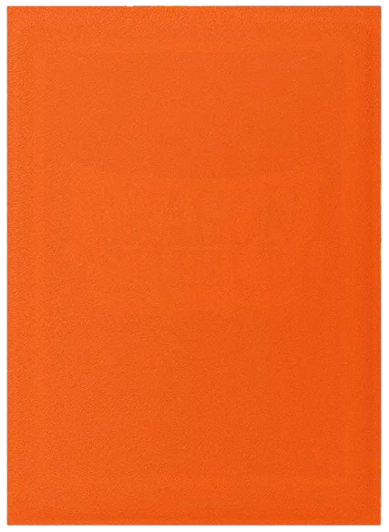
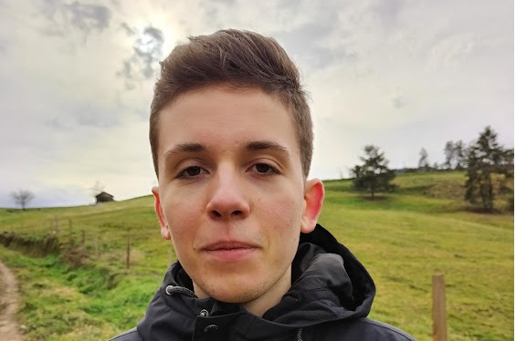
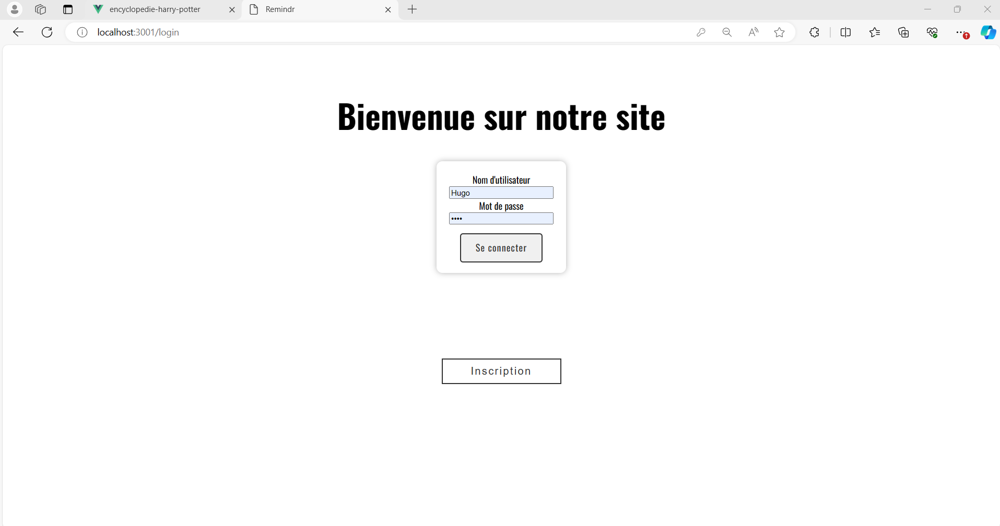
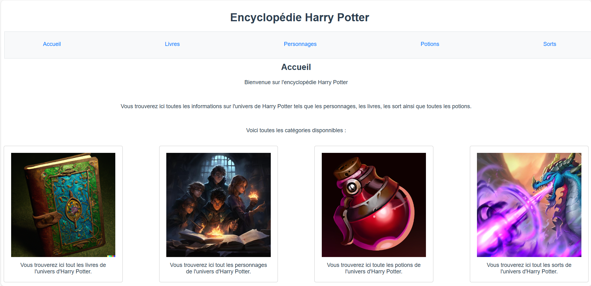

Bienvenue sur mon portfolio ! Je suis Hugo Faveyrial, de septembre à mars, vous auriez pu me croiser à l'IUT informatique du Puy-en-Velay. Cet IUT est spécialisé dans l'image (modélisation 3D et traitement de l'image), c'est donc aussi ma spécialité. Actuellement, je suis en stage chez Interscience dans le cantal. J'y participe à l'amélioration des programmes de tests de non-régression sur le ScanStation.



Neocity est un jeu vidéo développé avec Unity. C'est un city-builder centré sur les problèmes de réchauffement climatique.

Une application web de todo-list utilisant Express.

Utilisation de l'API potterDB pour créer une encyclopédie sur le thème d'Harry-Potter avec vue.js
La menace environnementale est surement le problème de société qui me préocupe le plus. A titre personnel, je refuse la voiture (d'où ma passion pour le cyclisme 🚴) et je ne mange de la viande qu'une fois par semaine au maximum. J'essaye de me documenter au maximum sur le sujet, mon livre préféré sur le sujet est probablement "le monde sans fin" même si, selon moi, le livre se concentre trop sur la menace climatique.
J'ai aussi pu réaliser de nombreux ateliers à l'IUT pour me sensibiliser aux problèmes environnementaux liés au numérique, par exemple, une fresque du numérique. Cet atelier à pour but de conscientiser tous les problèmes sociaux et écologiques engendrés par le numérique, de la consommation électrique à la production des terminaux.
Je suis persuadé qu'une réflexion sur les ressources utilisées et sur la qualité du code est indispensable pour réduire l'emprunte carbone du numérique.
Je pense aussi que le numérique peut être un outil important pour communiquer sur le sujet. Je vous invite à consulter mon travail sur Neocity, un jeu de gestion de ville centré sur l'écologie. J'en suis très fier 🤗.
Dépassement de soi, vitesse, proximité avec la nature. Voilà ce qui me plaît avec le cyclisme 😍 !!! Sans parler du fait que c'est un mode de déplacement trop peu estimé à mon avis.
Pour beaucoup de gens une soirée jeux est un bon moyen de s'ennuyer à mourir. Pour moi c'est surtout une activité stimulante et sociale qui permet d'entretenir sa réflexion ou son imaginaire. Mes jeux préférés sont les jeux de deck-building: notamment Challenger et Heroes Realms
Les plus beaux paysages du monde ! Un sport exigeant techniquement et physiquement ! Ce sport n'est pas le plus vert mais il vous convaincra que la nature est un trésor !